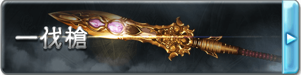

■一伐槍（D+500）
位于十天眾的頂點，總司整個蒼天的脅威之座上唯一賢人-烏諾所使用的長槍，具有均衡與守護的力量。外表是一把頭重腳輕體型纖長的長槍，在槍尖和槍身的結合處有著四溢的流光。
作為武器是一把傷害5L的長槍，專業：槍，具有【格擋2】的特性，并且能正常攻擊靈體和虛體。
心性暴亂者、滿懷殺意者、樂于挑起紛爭是非者，會被這把槍拒絕而無法使用乃至持握這把長槍。
■[黎明]一伐槍·真（C+1000）
脫去凡塵的氣息，槍尖的周圍浮現出四個環繞著槍尖轉動的晶體，與此同時槍刃也變為碧藍色的晶體狀形態。
作為武器的性能得到了提升，格擋提升至5點，并且獲得了【破魔5】和【9加骰】，獲得特性【抑止的槍尖】。
【抑止的槍尖】
均衡和加害與被害的力量，當自身與一個單位發生戰斗時，計算雙方在本場景中對對方造成的傷害總值，若攻擊方造成的總傷害較高，則其在本次攻擊中武器傷害下降傷害的差值，最低到1；反之則會提升傷害的差值，最高為原本的兩倍。若武器傷害的改變超過了上限（下限），則超過的數值會轉變為攻擊上的幸運加值（減值）。
■[黎明]一伐槍·○（B+2000）
這個階段的一伐槍已經不僅僅是烏諾的遺產，將會漸漸染上屬于你的色彩，在其他人的手里一伐槍將失去一切效果和能力，變為一把普通的長槍。從以下幾個詞綴中選擇一個作為一伐槍的后綴，這將會使一伐槍所造成的任意傷害轉變為對應的類型。與此同時，一伐槍晶體和流光的顏色也會轉化為對應的色彩。
焔:灼熱，赤
雪:凍寒，蒼
界:物理，黃
凪:音波，青
煌:神圣，白
煉:褻瀆，黑
與此同時，作為槍的性能再次提升，傷害提升至10L，格擋提升至12，破魔提升至10，加骰提升為【8加骰】，并且獲得特性【開眼者】。
【開眼者】
借由一伐槍的力量，持有者將能夠展開自己的心眼，以躲避致命的傷害。
當自身受到會使自身的生命被傷害填滿的傷害時，若此時完好生命大于一點，則會保留1點完好生命并防止溢出的傷害。這個效果一日最多發動一次。
此外，每當自身受到傷害時，可以投擲一個D10（該檢定不受其他任何能力影響），若結果為1，則在計算其他所有效果之后的最終傷害減少50%（不與其他按比例減傷的能力疊加）。
■[黎明]一伐槍·○○（A+4000）
繁華漸漸退去，一伐槍返璞歸真，華麗的槍身和槍刃轉變為無奇的黃銅質地，槍尖上鑲嵌了對應屬性顏色的寶石。接受這個階段的一伐槍意味著完全接受了烏諾‘均衡’的思想，將為維持和平與平衡而戰。
對應在B級選擇的屬性，一伐槍的后綴將會再次轉變，并帶來新的效果。
焔→紅天:武器攻擊造成的傷害將會帶來等同傷害的【燃燒】
雪→蒼天:武器攻擊造成的傷害將會帶來等同傷害的【凍結】
界→轟天:武器獲得【眩暈】特性，并且威猛提升10點
凪→疾天:武器獲得【超級貫穿】特性，并且高速提升10點
煌→白天:武器獲得【光明】特性，持有者在死亡后，靈魂會被保護在武器中，若被帶回主神空間則可以支付C+1000重塑身體而復活。
煉→黒天:武器獲得【黑暗】特性，被該武器擊殺的單位將無法以任何方式復活，這是一個A級的詛咒來源效果。
此外一伐槍作為槍的性能達到了極致，武器傷害提升為15L，格擋提升至17，獲得【神兵】特性。這一階段的一伐槍無法被任何方式破壞，即使不握在手中它也會自動漂浮著跟在持有者的身邊，此狀態下仍然視為持有者‘持有’著一伐槍。此外一伐槍獲得了【羅剎的豪槍】和【脅威的境界】兩個特性。
【羅剎的豪槍】
一伐槍為不爭之槍，但并非不抗之槍，對于敢于來犯的敵人，一伐槍將樂于協助主人將其徹底殲滅。
每當自身受到來自他人的傷害時，傷害中等同自身決心附加的數值將會改由對方自己承受。
【脅威的境界】
只要自身持有著一伐槍，則始終視為使用其進行格擋的狀態，并且可以將武技上的附加成功加入防御的附加成功，這視為格擋帶來的防御附加。
▓▓一伐槍術-太一輝極衝
若無特殊說明，該技能樹下的技藝只能由一伐槍為媒介來發動。
■剎那一閃（C+1000）
◆發動動作:標準
◆使用間隔:3輪
◆効果時間:1輪
「攻防一體、剎那の閃き！」
隨時準備援護隊友的守護技，瞬時出現在戰場的每一個角落為隊友提供防護。
發動后，任何在自身意志米范圍內的友方單位受到單體攻擊時，可以立刻移動至其身邊并將該攻擊對象轉變為自己。此外在持續時間中自身的閃避防御會提升等同敏捷附加與武技附加之和+1的數值。
■螺旋回鉾（CC+1500）
◆發動動作:標準
◆使用間隔:無
◆効果時間:一輪
「ここが攻め時、螺旋回鉾！」
應對攻擊的反擊技，以螺旋的姿態化解攻勢的同時進行回擊。
持續時間內可以對應一次波及到自身的攻擊發動，若發動攻擊的對象在自身周圍的1米/意志范圍中，則可以立刻使用反射動作率先對其進行一次回擊，這次回擊獲得等同你持有的格擋防御的技藝加值但是該加值不能超過你的武技等級，若這次攻擊造成傷害，則對象的這次攻擊會受到等同這次傷害的一半的技藝減值。
■城廓構成（BB+3000）
◆發動動作:1輪
◆使用間隔:6輪
◆効果時間:1輪
「これぞ鉄壁の槍術、城郭の構え！」
以自身中心，解放【一伐槍】的守護之力，為隊友結成不壞的壁壘。
進行一次攻擊檢定，這次攻擊不能計算專業等級，不造成攻擊而是直到下次自身行動前，以自身為中心111米直徑的范圍內所有的友方單位（包括自身）受到的任何傷害減少等同這次檢定成功的數值。
■一伐之祈（A+4000）
◆發動動作:標準
◆使用間隔:一場景內再使用不可
◆効果時間:3輪
「我が信念、只々鋭き槍となりて、一伐の如く一つなぎに輪を成さん！」
此乃逆轉的祈之槍，均衡了生死的境界。
在持續時間中，包括自身在內，同一場景中的友方單位所受到傷害（計算最終數值）減輕50%（不與其他按比例減傷的能力疊加）。并且在第一輪中，計算受影響對象受到的所有傷害，在自身行動結束時，那些對象回復對應數值的同類型傷害。這是A級祝福/詛咒來源的類無敵效果。
■天逆鉾（AA+6000）
◆發動動作:標準
◆使用間隔:一日內再使用不可
◆効果時間:即刻
「我が槍、爭心をこそ刈り取らん。天逆鉾（あめのさかほこ）！」
此乃逆轉因果之槍，將受諸于敵人的加害原數返還的神槍技。
對一個在本次場景中對自身造成過不利效果（包括但不限于傷害）的對象進行一次攻擊，本次攻擊只要造成一點傷害便可發動，雙方在本場景直到目前為止對對方造成的不利效果（包括本次攻擊造成的傷害）全部交換。這是一個AA級的命運來源效果。
■千槍無量曼荼羅（A+4000）
◆發動動作:一輪
◆使用間隔:一場景內再使用不可
◆効果時間:一場景
「強さの極限を見せよう…千槍無量曼荼羅！」
將【一伐槍】橫置于身前，喚出無數的槍刃環繞自身，懸浮于空中。
在這個狀態下，自身只能使用漂浮的方式移動，速度為陸地移動速度，最高高度為自身意志。自身可以同時對敏感范圍內的所有單位進行攻擊。獲得20點臨時生命（不計入完好生命值），臨時生命每回合自動回滿。